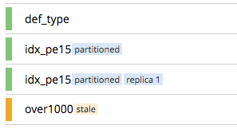
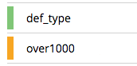
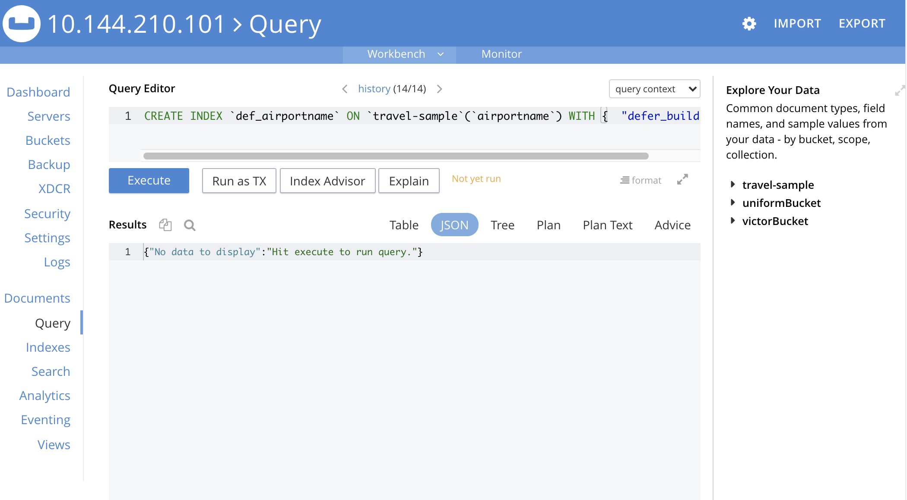
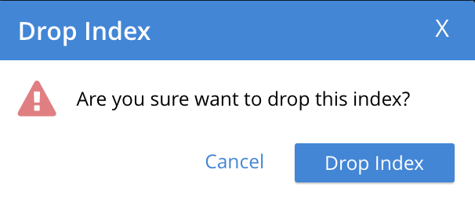

Manage Indexes
Indexes provided by the Index Service can be managed with Couchbase Web Console, with the CLI, and with the REST API.
Defining, Editing, and Managing Indexes
Indexes provided by the Index Service facilitate and enhance use of the Query Service; which reads information from and writes information to documents, provided by the Data Service. These indexes are administered by means of two facilities:
-
The SQL++ language, which is provided by the Query Service as a means of querying data within documents; and of defining and editing indexes. See the SQL++ Language Reference for information.
-
Couchbase Web Console, which provides a user interface for the management of indexes.
This page describes how to use Couchbase Web Console to manage indexes. It also shows how to use the console’s Query Editor, provided on the Query screen, to define and edit indexes by means of SQL++.
Access the Indexes Screen
The user interface for index management is provided on the Indexes screen. Access this by left-clicking on the tab in the left-hand navigation bar:

An index list, showing a summary of all currently-defined indexes, is displayed in table format.
The Bucket & Scope fields allow selection of a bucket from those defined on the cluster; and of a scope from those defined within the bucket. Left-click on the left-hand field, to display a pull-down menu of available buckets:
Likewise, left-click on the right-hand field, to display a pull-down menu of scopes within the selected bucket:
Each time a selection is made, the list of indexes in the lower panel is redisplayed; so as to show the indexes that are defined on data within the selected scope and bucket.
Note that towards the right, an additional control provides a pull-down menu whereby indexes can be viewed either for all Index-Service nodes on the cluster, or by node. Additionally, an interactive field is provided, to allow the displayed content to be filtered; by entering either all or part of an index-name.
Index Summary
The index list displays the following information about each index:
-
index name. The name of the index. There may also be one or more indicators after the index name, giving further information:
-
partitionedindicates that the index is partitioned. An overview of partitioning is provided in Index Partitioning. Examples of creating partitioned indexes are provided in Partition Keys. -
replica nindicates that this is an index replica, wherenis the replica ID. An overview of index replication, and examples of creating index replicas, are provided in Index Replication. -
staleindicates that the node on which the index or partition is stored is not available.
-
-
requests/sec. The number of requests per second.
-
resident ratio. The percentage of the data held in memory.
-
items. The number of items currently indexed.
-
data size. The size of indexable data that is maintained for the index or replica.
-
keyspace. The keyspace for which the index or replica was created.
-
status. The current state of the Index Service on the node on which this index is stored. The state can be expressed as ready, pause, warmup, or n mutations remaining (where n is an integer).
The color of the left margin of the index row also reflects the current state of the index. For example, the color is green when the index is ready; and orange when the index is in warmup.

Index Administration
To administer an index, left-click on a specific index row in the indexes list, to expand the row. (Subsequently, whenever appropriate, left-click on the row again, to collapse it.) When the row is expanded, it appears as follows:
The following information is thus provided:
-
Definition. The SQL++ statement used to define the index.
-
Storage Mode. The storage mode used by the Index Service on the node on which this index is stored.
-
Nodes. (Only displayed for partitioned indexes.) The nodes on which the index partitions are stored, and the number of partitions stored on each node.
In addition, when the index row is expanded, the Index Stats control is displayed, along with the Open in Workbench and Drop buttons. These controls are described below.
Show the Index Statistics
To see statistics for the index, left-click on the Index Stats control in the expanded index row. The panel expands vertically, and provides the following display of interactive charts:
For more information on these charts, see Index Statistics.
Open the Index in the Query Workbench
If an index is opened in the Query Workbench, its definition can be inspected and modified.
Proceed as follows:
-
From the Indexes screen, left-click the Open in Workbench button, in the expanded index row. The index definition is displayed in the Query Workbench:
 -
Modify the SQL++ index-definition, as required. (Note that you cannot change the definition of the existing index, but you can create a new index with the modified definition.)
Immediately beneath the Query Editor, four buttons are displayed. These can be used to test queries, and to determine how to design corresponding indexes; so as to maximize query-performance. The buttons are as follows.
Execute
When left-clicked on, this executes the query that has been typed into the Query Editor.
For example, type the following query into the Query Editor: SELECT icao FROM `travel-sample` WHERE name = "SeaPort Airlines";.
This selects every icao key-value pair from the bucket travel-sample, where the host document also contains a name value that is SeaPort Airlines:
Left-click on the Execute button.
Couchbase Web Console now provides feedback on the ongoing execution of the query, to the right of the buttons. When query-execution has concluded, the results are duly displayed:
Note also that the default appearance of the Query screen includes, at the upper right, a button labeled query context:
Left-click on the control at the right-hand side of the button, to reveal its pulldown menu. This menu contains an entry for each bucket defined on the cluster:
Once a bucket has been selected, a further button (with pulldown-menu control) appears to the right, allowing selection of a scope within the selected bucket:
Once a scope — for example, inventory — has been selected, queries can be entered into the Query Editor panel without explicit specification of bucket or scope being required: the bucket and scope for the query will be inferred from the pulldown-menu selections that have been made.
For example, the following expression performs a query on the documents in the airline collection; which itself resides within inventory, within travel-sample:
Note that buckets and scopes other than those currently selected by means of the pulldown menus can still be explicitly specified within the Query Editor, if required.
Explain
When left-clicked on, this provides an explanation of how query-execution proceeded:
The explanation is now displayed in the Query Results panel:
This indicates the bucket and primary index scan that have been used in the query; as well as the filter applied, and the number of terms returned.
Index Advisor
When left-clicked on, this displays advice as to what index or indexes might be created, in order to improve the future performance of the query:
Advice is duly displayed in the Query Results panel:
In this instance, the advice consists of two options; which are, respectively, the creation of a covering index, and the creation of a regular index. To create a covering index, left-click on the Create and Build Covering Index button:
The following notification is now displayed:
Left-click on Continue. When index-creation is completed, the following success-message appears on the Query screen:
Run as TX
The Run as TX button allows the specified query to be run transactionally, across multiple indexes. For information on transactions, see Transactions.
Left-click on the Run as TX button, and the query is run as a transaction. When the transaction is complete, status is displayed as follows:
Index-Definition Support in Community Edition
Note that in Couchbase Server Community Edition, index-definition support is provided in a slightly different way. The area immediately below the Query Editor appears as follows:
The External Query Advisor link takes the user to an external web-site, where the Query Advisor can be accessed and used.
Drop the Index
To drop the index from the bucket:
-
Left-click the Drop button in the expanded index row.
A pop-up message appears, asking if you are sure you want to drop the index.
 -
Left-click on the Drop Index button, to drop the index. Alternatively, left-click on the Cancel button, to cancel.
Note that you can also drop an index by means of the SQL++ DROP INDEX and DROP PRIMARY INDEX commands.
Index Summary Statistics
Summary statistics for the Index Service are displayed in the footer of the Indexes screen.
For details of the index summary statistics, refer to Index Service Statistics.
Manage Indexes with the CLI
You can manage some Index-Service settings using the CLI. Refer to Index Storage Settings via CLI.
Note that there is no CLI support for the administration of specific indexes. However, you can get index information from the system catalog. Refer to Querying Indexes.
You can also edit or remove indexes using SQL++. Refer to SQL++ Language Reference for more details.
Manage Indexes with the REST API
You can manage some Index-Service settings using the REST API. Refer to Index Settings via REST.
Note that there is no REST API support for the administration of specific indexes.
See Also
Information on index statistics is provided in Monitor Indexes.